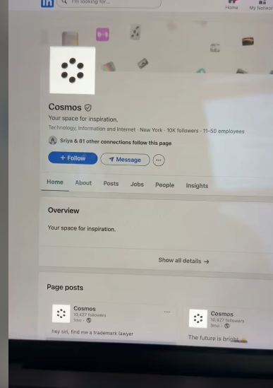

🌟 Glowkri
LinkedIn Glowing HDR Logo Generator
The native macOS script to create ultra-bright, 10,000-nit "glowing" white logos for LinkedIn.

Have you seen those ridiculously bright, glowing logos on LinkedIn that seem to jump off the screen on your iPhone or MacBook? They use a clever HDR trick to bypass standard compression.
🚀 Get Started in Seconds
Prerequisite: You just need a Mac. No coding experience required!
1
Open Terminal (Press ⌘ + Space, type "Terminal", hit Enter).
2
Copy and paste the command below, then hit Enter:
bash
curl -fsSL https://raw.githubusercontent.com/jemishavasoya/Glowkri/main/glowkri.sh -o glowkri.sh && chmod +x glowkri.sh && ./glowkri.sh3
The script will ask for your image. Drag & Drop your logo into the Terminal and hit Enter!
✨ Features
- 🔆 True 10,000 Nits: Forces Apple EDR displays to max brightness.
- 🛡️ Metadata Injector: Bypasses LinkedIn's aggressive compression.
- ⚡ Native Swift: Zero dependencies (no ImageMagick or Python).
- ⏱️ Instant: Runs entirely locally on your Mac in milliseconds.
💻 System Support
| OS | Status |
|---|---|
| macOS (Intel, Apple Silicon) | ✅ Supported |
| Linux | ❌ Unsupported |
| Windows | ❌ Unsupported |
⚠️ CRITICAL: How to Upload
Do NOT use AirDrop or the native iOS Image Picker to upload!
The Apple iOS Image Picker automatically converts non-standard HDR JPEGs to SDR before LinkedIn even receives the file.
- Upload directly from your Mac desktop web browser (Chrome, Safari, etc.).
- Confirmed to work consistently for Company Profiles. Personal profiles often undergo heavy compression.